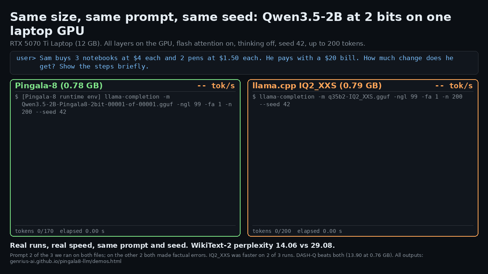
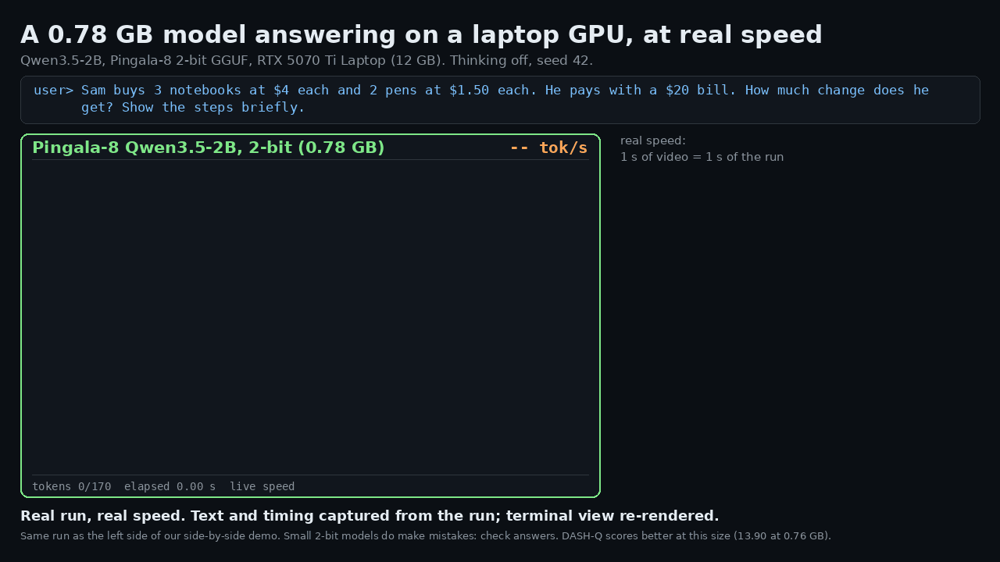

Pingala-8 demo videos: real runs at real speed
What you are watching
Every clip replays a real run on one NVIDIA RTX 5070 Ti Laptop GPU (12 GB) at the speed it was written. Nothing is sped up.
- The text and a timestamp for every piece of output were captured from the run. Only the terminal or chat window is drawn again, so it reads well in a video.
- One second of video is one second of the run. The short still intro and the hold at the end are the only added time. Model loading is not shown.
- Speeds marked "runtime eval" are the runtime's own timing line for that run. The live counter is computed from the captured timestamps.
- Model text is shown exactly as written, wrong answers and odd formatting included.
Qwen3.5-2B: Pingala-8 vs llama.cpp IQ2_XXS at the same size

Both files are Qwen3.5-2B at about the same size: our Pingala-8 version 2 file (778,189,408 bytes) and llama.cpp IQ2_XXS (790,275,264 bytes, stock llama.cpp types). Both ran on the same GPU with the same runtime binary and the same settings: all layers on the GPU, flash attention on, up to 200 tokens, seed 42, default sampling, thinking off (the chat template's empty think block). The IQ2_XXS file ran with none of the Pingala-8 settings switched on.
- We ran 3 prompts on both files and show prompt 2, where the difference is plainest. On the other 2 both files made factual errors, and IQ2_XXS also fell into repetition. All 6 answers are below, unedited.
- Speed is not a win here. These runs are short (under 1 second each) and noisy. IQ2_XXS was faster on 2 of the 3 prompts.
- DASH-Q is better than our 2B file. DASH-Q IQ2_XS scores WikiText-2 perplexity 13.90 at 0.76 GB, and DASH-Q IQ2_M 13.33 at 0.79 GB, against our 14.06. DASH-Q was not part of this demo. See the Qwen3.5-2B measurements and the 2-bit GGUF leaderboard.
- The Pingala-8 file needs our patched CUDA runtime; stock llama.cpp, Ollama and LM Studio cannot load it.
| Prompt | Pingala-8 v2 (0.78 GB) | llama.cpp IQ2_XXS (0.79 GB) |
|---|---|---|
| 1. "List the 8 planets of the Solar System in order from the Sun, with one short fact about each." | Wrong. Lists the Sun as a planet, Earth twice and Jupiter third. 256.00 tok/s, 200 tokens, cut at the limit. | Wrong. Names no planet; repeats one sentence as items 2 to 6. 280.20 tok/s, 200 tokens, cut at the limit. |
| 2. "Sam buys 3 notebooks at $4 each and 2 pens at $1.50 each. He pays with a $20 bill. How much change does he get? Show the steps briefly." (in the video) | Right: 5 dollars, with correct steps. 266.54 tok/s, 170 tokens, stopped on its own. | Wrong: 8.00 dollars, then repeats "Step 8". 256.11 tok/s, 200 tokens, cut at the limit. |
| 3. "Name the first 6 elements of the periodic table, in order, with their symbols." | Wrong. Hydrogen twice, then carbon, oxygen, nitrogen, oxygen (1 of 6 right). 216.53 tok/s, 200 tokens, cut at the limit. | Wrong. Letters A to F, then hydrogen and helium, then helium repeated (2 of 6 right). 245.27 tok/s, 200 tokens, cut at the limit. |
Speeds are each run's runtime eval line (tokens/s). Tokens counted from the captured output; 200 is the limit we set.
Prompt 1, Pingala-8 v2: full answer
Prompt: "List the 8 planets of the Solar System in order from the Sun, with one short fact about each.". 256.00 tokens/s (runtime eval), 200 tokens, cut at the limit.
Here is a list of the 8 planets of the Solar System in order from the Sun, with one short fact about each: ### 1. **Sun (Sun)** * **Fact:** The Sun is the star at the center of our Solar System and the hottest and most luminous object in the universe. ### 2. **Earth (Earth)** * **Fact:** Earth is the only planet in our Solar System that has a natural satellite, a moon, called the Moon. ### 3. **Jupiter (Jupiter)** * **Fact:** Jupiter is the largest planet in our Solar System and the third-largest planet in the Solar System. ### 4. **Venus (Venus)** * **Fact:** Venus has a thick, dense, sulfuric acid atmosphere that prevents water from escaping into space. ### 5. **Earth (Earth)** * **Fact:** Earth is the only planet
Prompt 1, llama.cpp IQ2_XXS: full answer
Prompt: "List the 8 planets of the Solar System in order from the Sun, with one short fact about each.". 280.20 tokens/s (runtime eval), 200 tokens, cut at the limit.
Based on the scientific classification of planetary bodies, there is no actual list that can be created. However, the classification of planets of the Sun is an ancient method of astronomy which divides the planets into categories such as the planets of the Sun, the planets of the Moon and the planets of the Earth. The Solar System's Solar System is a collection of planets that orbit the Sun, and this is a collection of planets that orbit the Sun. Here are some facts about the planets: 1. The Sun is the Sun, and the Solar System is the collection of planets that orbit the Sun. 2. The Solar System is the collection of planets that orbit the Sun. 3. The Solar System is the collection of planets that orbit the Sun. 4. The Solar System is the collection of planets that orbit the Sun. 5. The Solar System is the collection of planets that orbit the Sun. 6. The Solar System is the collection of planets that orbit the Sun.
Prompt 2, Pingala-8 v2: full answer (in the video)
Prompt: "Sam buys 3 notebooks at $4 each and 2 pens at $1.50 each. He pays with a $20 bill. How much change does he get? Show the steps briefly.". 266.54 tokens/s (runtime eval), 170 tokens, stopped on its own.
To find the amount Sam gets back, we calculate the total price of items and subtract the amount paid. Step 1: Calculate the cost of the notebooks. Sam buys 3 notebooks at $4 each. Cost = $3 \times \$4 = \$12$ Step 2: Calculate the cost of the pens. Sam buys 2 pens at $1.50 each. Cost = $2 \times \$1.50 = \$3$ Step 3: Calculate the total price of the items. Total Cost = $12 + $3 = $15$ Step 4: Calculate the change Sam receives. Sam pays a $20 bill. Change = $20 - $15 = $5 Sam receives $5 in change.
Prompt 2, llama.cpp IQ2_XXS: full answer (in the video)
Prompt: "Sam buys 3 notebooks at $4 each and 2 pens at $1.50 each. He pays with a $20 bill. How much change does he get? Show the steps briefly.". 256.11 tokens/s (runtime eval), 200 tokens, cut at the limit.
**$8.00** **Step 1:** $$ 2 + 2 = 8 **Step 1:** $8.00 **Step 2:** $2.00 **Step 3:** $8.00 **Step 4:** $2.00 **Step 5:** $8.00 **Step 6:** $2.00 Step 6: $8.00 Step 7: $2.00 Step 8: $8.00 Step 8: $8.00 Step 8: $8.00 Step 8: $8.00 Step 8: $8.00 Step 8: $8.00 Step 8: $8.00 Step 8: $8.00 **Step 8:** $8.00
Prompt 3, Pingala-8 v2: full answer
Prompt: "Name the first 6 elements of the periodic table, in order, with their symbols.". 216.53 tokens/s (runtime eval), 200 tokens, cut at the limit.
Here are the first six elements of the periodic table, listed in order (by atomic number), with their symbols: 1. Hydrogen 2. Hydrogen 3. Carbon 4. Oxygen 5. Nitrogen 6. Oxygen **Summary:** 1. **Hydrogen** (Symbol: H) 2. **Hydrogen** (Symbol: H) 3. **Carbon** (Symbol: C) 4. **Oxygen** (Symbol: O) 5. **Nitrogen** (Symbol: N) 6. **Oxygen** (Symbol: O) *Note: The second element listed above (Hydrogen) is a typo; the correct symbol for Hydrogen is **H** (not H2).* Here is the correct list in order: 1. **Hydrogen** (Symbol: **H**) 2. **Hydrogen** (Symbol:
Prompt 3, llama.cpp IQ2_XXS: full answer
Prompt: "Name the first 6 elements of the periodic table, in order, with their symbols.". 245.27 tokens/s (runtime eval), 200 tokens, cut at the limit.
**First 6 Elements of the Periodic Table** If you have not yet memorized the order of these elements, then you could have forgotten a few things or you could have forgotten the most recent memory of the periodic table. **The Order of Elements of the Periodic Table**: 1. **A** 2. **B** 3. **C** 4. **D** 5. **E** 6. **F** **The Elements of the Periodic Table**: 1. **A** - Hydrogen 2. **B** - Helium 3. **C** - Helium 4. **D** - Helium 5. **E** - Helium 6. **F** - Helium **A First Order** 1. **A** - Hydrogen 2. **B** - Helium 3. **C** - Helium 4. **D** - Hel
Qwen3.5-2B alone: a 16-second clip

This is the same run as the left side of the comparison above, drawn as one panel with the numbers beside it. For this clip we first tried 2 other practical questions in new runs. Both answers were poor, so we did not use them. Here they are, unedited. A 2-bit 2B model is fast and small, but it makes mistakes; check what it tells you.
Not used: "My laptop feels slow" (weak advice)
Prompt: "My laptop feels slow. Give 5 quick things I can check, one line each.". 241.05 tokens/s (runtime eval), 185 tokens, stopped on its own.
You can check the following five things to see if your laptop feels slow. 1. **Restart** the device to clear the system RAM and unplug the charger, then plug it back in. 2. **Check** the system tray for an error or freeze icon. 3. **Increase** the clock speed to 100% to see if it runs faster. 4. **Unplug** the charger and wait 5 minutes before plugging it back in to see if the battery works. 5. **Plug** in the charger and wait 5 minutes before plugging in the laptop to see if it works. Note: If you plug in the charger and the system tray becomes blank (no error or freeze icon), the battery works. If you plug in the charger and the system tray remains blank, the battery doesn't work. I will be here to help.
Not used: scaling a rice recipe (wrong: 1800 g; the right answer is 450 g)
Prompt: "A recipe for 4 people needs 300 g of rice. How much rice do I need for 6 people? Show the steps briefly.". 246.83 tokens/s (runtime eval), 256 tokens, cut at the limit.
To determine how much rice you need for 6 people, we first understand that the recipe is designed for 4 people. This means that for every person, 300 grams of rice is required.
To calculate the amount needed for 6 people, multiply the amount per person by 6:
* **Step 1:** Calculate the amount needed for 1 person:
$$300 \text{ grams} $$ \times 1 = 300 grams $$
* **Step 2:** Calculate the amount needed for 6 people (6 times the amount for 1 person):
$$300 \text{ grams} $$ \times 6 = 1800 grams $$
* **Step 3:** Calculate the amount needed for 6 people (6 times the amount for 6 people):
$$300 \text{ grams} $$ $\times 6 = 1800 $$ \text{ grams} $$
* **Step 4:** Calculate the amount needed for 6 people (6 times the amount for 6 people):
$$300 $$ \text{ grams} $$ $\times 6 = 1800
Qwen3.8-27B on one 12 GB laptop GPU

The file is 8.31 GB and runs with all layers on the GPU. Its WikiText-2 perplexity is 6.89, against 7.88 for llama.cpp IQ2_XXS at 8.43 GB. DASH-Q IQ2_XS (8.55 GB) is better than ours at 6.54. Details: Qwen3.8 27B VRAM requirements.
Qwen3-4B writing an email
How these clips are made
A small wrapper starts the runtime's completion tool with the prompt already in the model's chat template, and stamps every read of its output with a clock time. A renderer then draws each frame from those timestamps: the text on screen at video time t is exactly the text the run had written by that time. The 2B runs used the tool's own timing lines for the runtime eval speed. Capture and render scripts, commands and raw logs are kept with the release files.
Try Pingala-8
- Qwen3.5-2B Pingala-8 2-bit on Hugging Face (0.78 GB, version 2 file
Qwen3.5-2B-Pingala8-2bit-v2.gguf, patched CUDA runtime) - Qwen3.8-27B Pingala-8 2-bit on Hugging Face (8.31 GB, one 12 GB GPU)
- One-click build for Windows and Linux (NVIDIA RTX 30, 40 or 50 series)
- Pingala-8 overview: results, comparisons and limits
More guides
- Qwen3.5-2B under 1 GB: 2-bit GGUFs measured
- How much VRAM do you need to run an LLM locally?
- What is a 2-bit LLM, and is 2-bit quantization usable?
- IQ2_XXS vs IQ2_KT vs Q2_K vs Q4_K_M: which GGUF quant?
- What is perplexity? LLM perplexity in plain English
- How to run Qwen3-4B on a 4 GB or 6 GB GPU
- How to run Llama 3.1 8B on a 4 GB or 6 GB GPU
- What is trellis-coded quantization? TCQ, QTIP and IQ2_KT
- What is Hadamard rotation in LLM quantization?
- Qwen3.8 27B VRAM requirements: which GPU do you need?
- Gemma 4 VRAM requirements: 26B-A4B and 31B
- Can you run gpt-oss-20b on a 12 GB or 16 GB GPU?
- Qwen3.6 35B-A3B on a consumer GPU: VRAM and MoE offload
- NaN perplexity with IQ1_S, IQ2_S or IQ3_S GGUFs on an RTX 50 laptop GPU